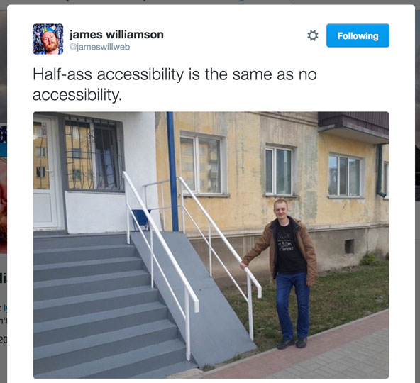
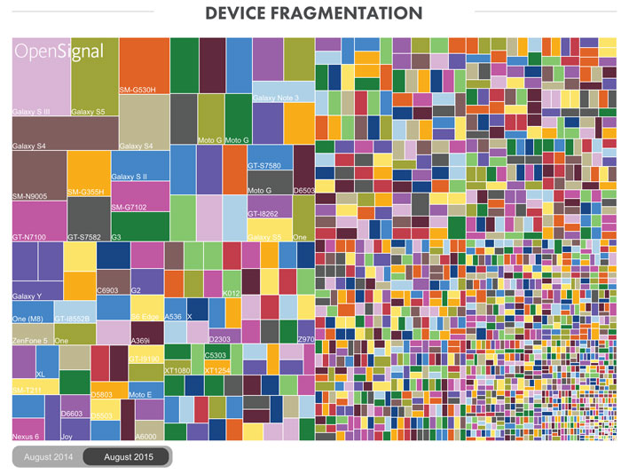
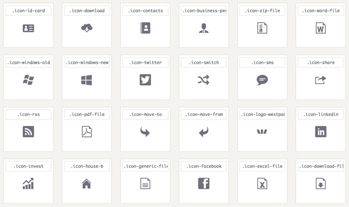
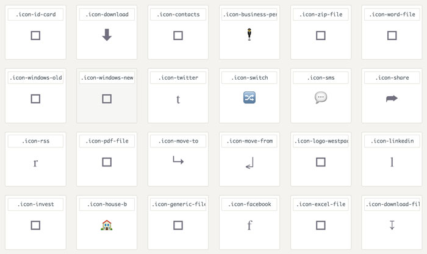

My favourite a11y things
Or why a11y doesn’t stop with screen readers
By Dominik
Or:
Internet is slow
-
Remote areas in Australia
(Almost everywhere in Oz really) - Train / Bus in tunnel
- Old contract only includes EDGE connection
- Student in a library / Public wifi
- The work internet that you tether to circumvent your work firewall
Offline first
-

-

-

-
-
W3C Specifications
(awesome GitHub repo) - Offline is not an error
- Remain functional and store states/data locally
- Commuicate a possible risk of something being out of sync
-
Devices are slow
Use CSS for animations and fancy effects (degrade to just show and hide in older devices)
Test your performance
(RAIL, 60fps, #perfmatters)
Security is important
- Ad blockers
- Ad blockers to save on data
False positive ➝ no-js
- https://easylist.github.io/easylist/easylist.txt
Don't use icon fonts
- 
- 
HTTPS and letsencrypt
Tabs vs spaces
Use tabs for indentation,
spaces for alignment.
It’s all the same once it’s gone through the compiler right?!